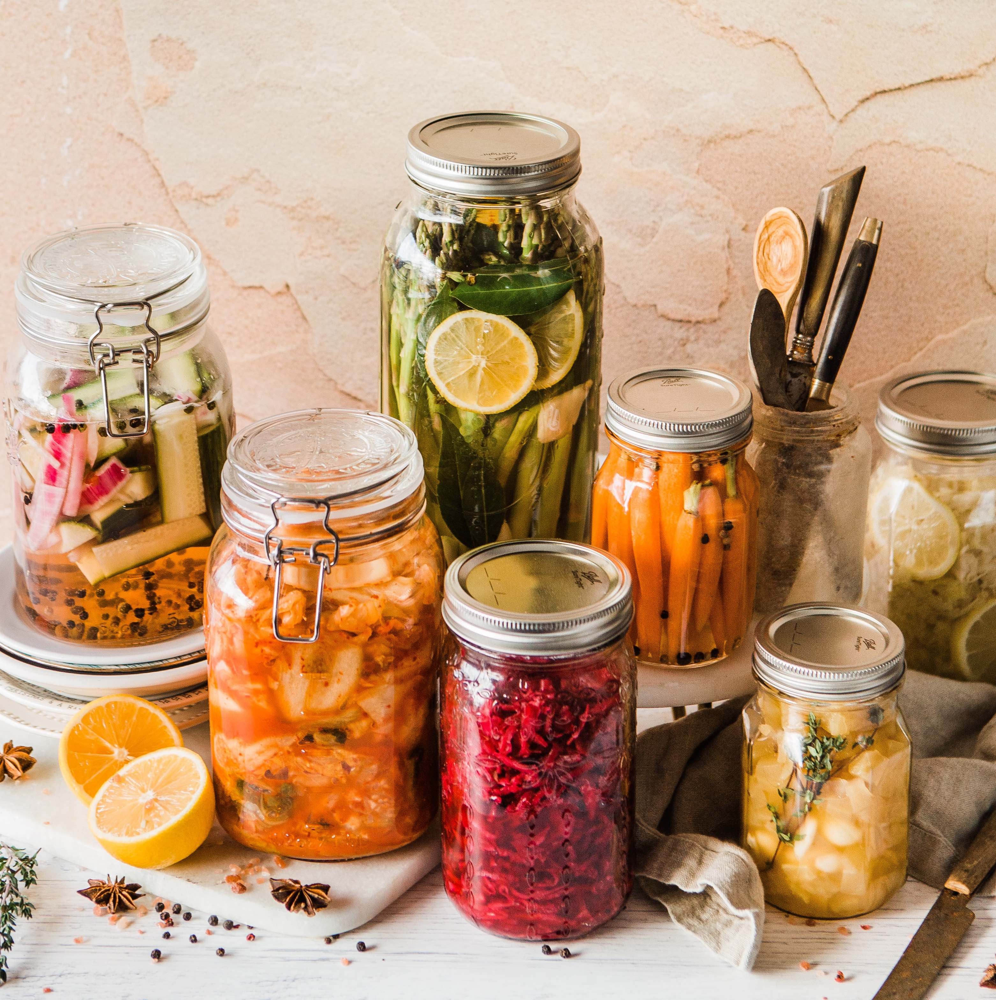

Le rééquilibrage alimentaire, on connait la chanson

“Beaucoup de légumes ...”
“Moins de sucres raffinés ...”
STOP !
Diététicienne à Bordeaux Mérignac, j’accueille toutes les personnes qui souhaitent un suivi alimentaire. Que ce soit dans un but de perte ou prise de poids, dans le cadre d’une pathologie (trouble du comportement alimentaire, obésité, diabètes, diabète gestationnel, troubles du transit, syndrome de l’intestin irritable, …) ou d’un mal-être corporel, vous êtes les bienvenus. Nous sommes tous différents les uns des autres donc un même régime alimentaire ne peut pas correspondre à tout le monde. J’utilise l’alimentation intuitive pour créer avec vous une méthode sur mesure pour vous permettre d’atteindre vos objectifs. Je vous attend au cabinet ou en téléconsultation!
Ma pratique est majoritairement basée sur l’écoute des sensations alimentaires (faim, envie, satiété et rassasiement), dans le but de faire correspondre vos apports avec vos besoins.
Pathologies prisent en charge :
Bonjour, je m’appelle Andréa, je suis diététicienne nutritionniste et je vis à Bordeaux depuis maintenant 4 ans.
Comme pour beaucoup d’adolescents, mon rapport à l’alimentation n’a pas toujours été très sain. Un jour, mon médecin généraliste m’annonce que je suis en surpoids. Ce sera le début des régimes pour moi.
Avec l’aide d’internet, je m’essaye au régime hyperprotéiné, me nourrissant de jambon blanc à longueur de journée, puis je compte mes calories scrupuleusement pour ne pas dépasser les 1200 kcal, j’ai même essayé de compter mes points selon les aliments. Rien n’a fonctionné dans la durée. J’ai perdu du poids au début, suivant méticuleusement les protocoles. Mais me sentant privée, je finissais souvent par céder à mes envies d’aliments interdits, de chocolat, de frites et autre junk food qui paraissent si délicieux face aux légumes bouillis et poissons vapeur, eux autorisés et incontournables. On se met petit à petit à intellectualiser notre façon de manger et on oublie peu à peu nos sensations alimentaires.
Devenue diététicienne, peut-être par intérêt, je comprends parfaitement les mécanismes du fonctionnement de notre organisme, ce dont il a besoin pour stabiliser votre poids, mais aussi toute la dimension psychologique de notre fonctionnement. Pendant mes études, j’ai découvert l’approche bio-psycho-sensorielle du Groupe de Réflexion sur l’Obésité et le Surpoids (GROS) auquel j’adhère et que je mets en pratique. Cette méthode axée sur la restriction cognitive nous permet de sortir du cycle infernal “régime, sanction, culpabilité”, et cela m’a enfin permis de rejoindre mon poids d’équilibre et de le stabiliser.
Si vous aussi vous souhaitez réapprendre à écouter votre corps et éliminer la culpabilité liée à votre alimentation, n’hésitez pas à prendre rendez-vous.
Le tarif d'une consultation diététique est de 42€
Tarif étudiant sur présentation d'un justificatif : 35 €
De nombreuses mutuelles ou assurances santé permettent un remboursement total ou partiel des consultations délivrées par une diététicienne.
![[Un plateau de fruits et de léguments appétissants dans des petits bols] Source: https://unsplash.com/@](/images/andrea-pagliardini-dieteticienne-bordeaux-merignac-reequilibrage-alimentaire.png) Le rééquilibrage alimentaire
Le rééquilibrage alimentaire